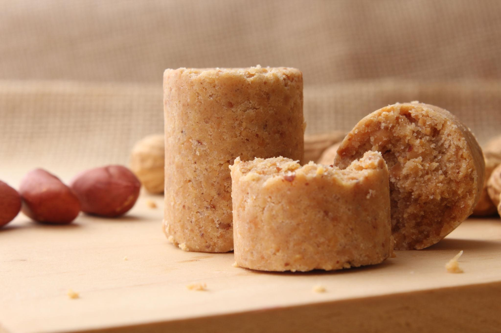
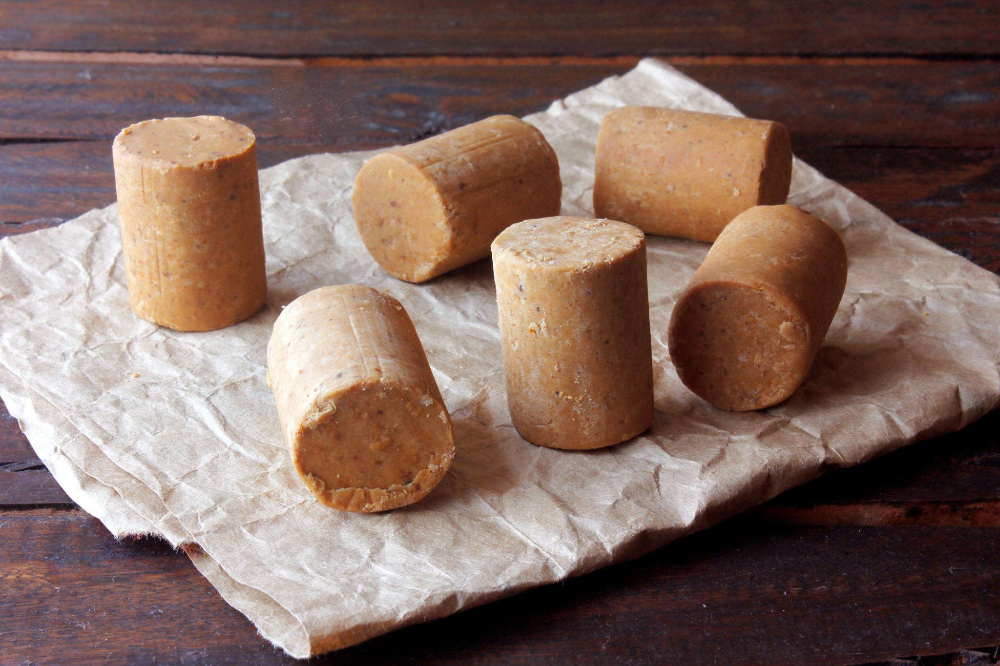
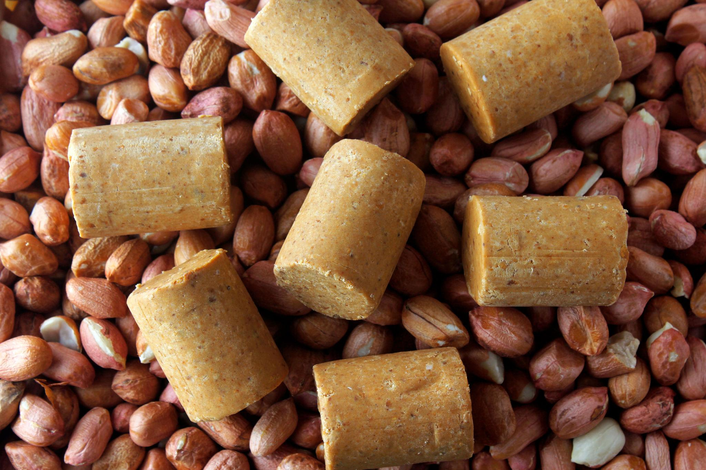

Description
Paçoca is a traditional Brazilian peanut candy made with peanuts, sugar, and crushed crackers or flour. It has a crumbly texture and a sweet peanut flavor. Paçoca is especially popular during Festa Junina celebrations.
Ingredients
- 2 cups roasted peanuts
- 1/2 cup sugar
- 1/2 cup crushed crackers
- A pinch of salt
Steps
- Add the peanuts, sugar, crackers, and salt to a food processor.
- Blend until the mixture becomes fine and crumbly.
- Press the mixture into small molds or shape with your hands.
- Let it rest for a few minutes.
- Serve.